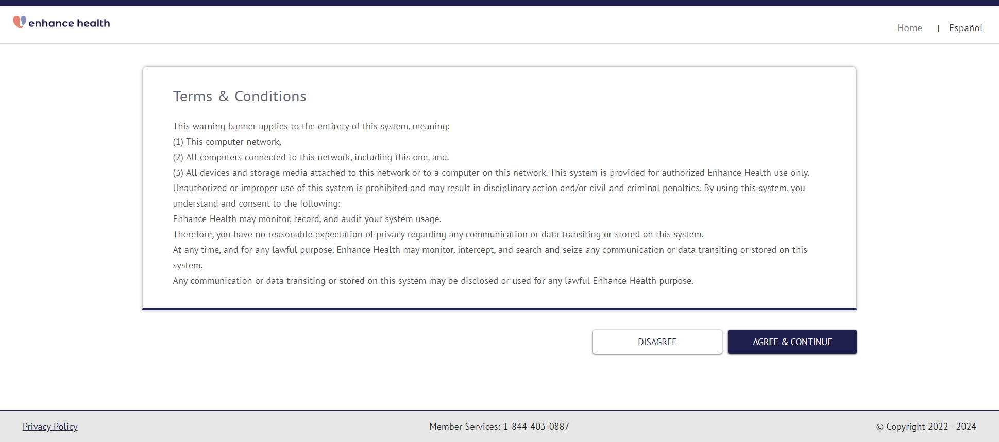
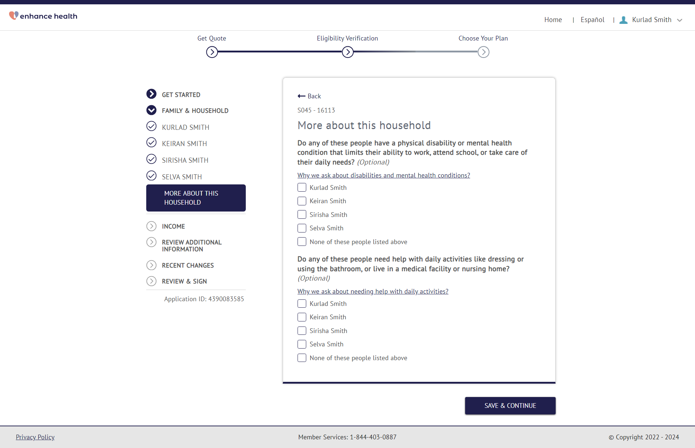
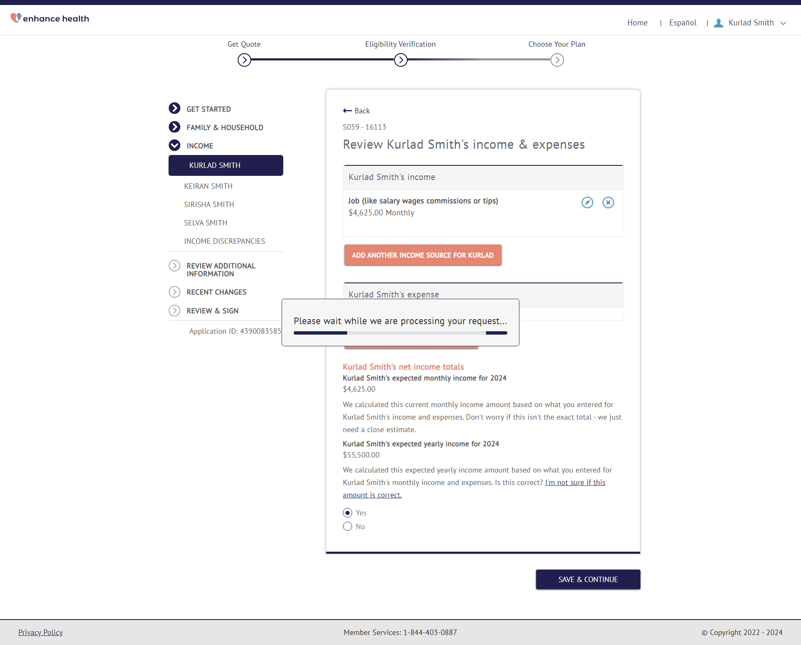

Tests
1 test(s) passed
0 test(s) failed, 0 others
Timeline (seconds)
-
PTC120 Monday, May 13, 2024, 07:52 AM (PDT) passMonday, May 13, 2024, 07:52 AM (PDT) Monday, May 13, 2024, 07:58 AM (PDT) 0h 5m 53s+37msPartner Test Case 120
Status Timestamp Details info_outline 7:52:18 AM Opening URL: https://enhanceuat.jet-insure.com/qoutedeeplink?PartnerCode=ENHANCE info_outline 7:52:21 AM Screen Capture info_outline 7:52:22 AM Entering Email EDE: mark@yopmail.com info_outline 7:52:22 AM Entering password EDE: SweetPakistan786@@ info_outline 7:52:30 AM Screen Capture  info_outline 7:52:33 AM Screen Capture info_outline 7:52:35 AM Screen Capture 
info_outline 7:52:39 AM Screen Capture info_outline 7:52:41 AM Screen Capture 
info_outline 7:52:41 AM ---------------------SCREEN S001---------------------------- info_outline 7:52:41 AM Getting s001 question text: Do you need coverage for yourself? info_outline 7:52:41 AM Entering first name: Kurlad info_outline 7:52:41 AM Entering Date of birth: 03/27/1990 info_outline 7:52:41 AM Entering middle name: info_outline 7:52:42 AM Entering last name: Smith info_outline 7:52:44 AM Screen Capture 
info_outline 7:52:46 AM Screen Capture info_outline 7:52:46 AM ---------------------SCREEN S002---------------------------- info_outline 7:52:47 AM Entering street address: 2028 N Wildflower Ln info_outline 7:52:47 AM Getting s002 question text: What's your home address? info_outline 7:52:47 AM Expected: What's your home address? info_outline 7:52:47 AM Found: What's your home address? info_outline 7:52:47 AM Verified: What's your home address? on S002 info_outline 7:52:47 AM State selected: AZ info_outline 7:52:48 AM Entering city: Casa Grande info_outline 7:52:48 AM Entering zipCode: 25456 info_outline 7:52:48 AM Entering zip code: 85122 info_outline 7:52:48 AM Clicking county drop down info_outline 7:52:49 AM Clicking county info_outline 7:52:50 AM Screen Capture info_outline 7:52:52 AM Screen Capture info_outline 7:52:58 AM ---------------------SCREEN S003---------------------------- info_outline 7:53:00 AM Getting s003 question text: Is this also your mailing address? Learn how mailing address affects coverage. info_outline 7:53:00 AM Expected: Is this also your mailing address? info_outline 7:53:00 AM Found: Is this also your mailing address? info_outline 7:53:00 AM Verified: Is this also your mailing address? on S003 info_outline 7:53:02 AM Screen Capture 
info_outline 7:53:04 AM Screen Capture info_outline 7:53:04 AM ---------------------SCREEN S004---------------------------- info_outline 7:53:04 AM Entering phone number: (898) 788-4538 info_outline 7:53:04 AM Getting s004 question text: What's your contact information? info_outline 7:53:04 AM Expected: What's your contact information? info_outline 7:53:04 AM Found: What's your contact information? info_outline 7:53:04 AM Verified: What's your contact information? on S004 info_outline 7:53:06 AM Screen Capture 
info_outline 7:53:08 AM Screen Capture info_outline 7:53:08 AM ---------------------SCREEN S005---------------------------- info_outline 7:53:08 AM Getting s005 question text: What's your preferred language? info_outline 7:53:08 AM Expected: What's your preferred language? info_outline 7:53:08 AM Found: What's your preferred language? info_outline 7:53:08 AM Verified: What's your preferred language? on S005 info_outline 7:53:10 AM Screen Capture 
info_outline 7:53:12 AM Screen Capture info_outline 7:53:12 AM ---------------------SCREEN S006---------------------------- info_outline 7:53:12 AM Getting s006 question text: How would you like to get notices about your application? info_outline 7:53:12 AM Expected: How would you like to get notices about your application? info_outline 7:53:12 AM Found: How would you like to get notices about your application? info_outline 7:53:12 AM Verified: How would you like to get notices about your application? on S006 info_outline 7:53:14 AM Screen Capture info_outline 7:53:16 AM Screen Capture 
info_outline 7:53:16 AM ---------------------SCREEN S007---------------------------- info_outline 7:53:16 AM Getting s007 question text: Is a professional helping you complete your application? info_outline 7:53:16 AM Expected: Is a professional helping you complete your application? info_outline 7:53:16 AM Found: Is a professional helping you complete your application? info_outline 7:53:16 AM Verified: Is a professional helping you complete your application? on S007 info_outline 7:53:18 AM Screen Capture 
info_outline 7:53:20 AM Screen Capture info_outline 7:53:20 AM ---------------------SCREEN S008---------------------------- info_outline 7:53:20 AM Getting s008 question text: Do you want to find out if you can get help paying for health coverage? info_outline 7:53:20 AM Expected: Do you want to find out if you can get help paying for health coverage? info_outline 7:53:20 AM Found: Do you want to find out if you can get help paying for health coverage? info_outline 7:53:20 AM Verified: Do you want to find out if you can get help paying for health coverage? on S008 info_outline 7:53:22 AM Screen Capture info_outline 7:53:24 AM Screen Capture info_outline 7:53:24 AM ---------------------SCREEN S010---------------------------- info_outline 7:53:24 AM Getting Application Id: text: Application ID: 4390083585 info_outline 7:53:25 AM Entering Date of birth: 03/16/1990 info_outline 7:53:26 AM Entering first name: Keiran info_outline 7:53:26 AM Entering last name: Smith info_outline 7:53:27 AM Relation selected: Spouse info_outline 7:53:28 AM Entering Date of birth: 03/26/2018 info_outline 7:53:28 AM Entering first name: Selva info_outline 7:53:28 AM Entering last name: Smith info_outline 7:53:29 AM Relation selected: Son/daughter (including adopted child) info_outline 7:53:30 AM Relation selected: Son/daughter (including adopted child) info_outline 7:53:31 AM Entering Date of birth: 04/12/2016 info_outline 7:53:31 AM Entering first name: Sirisha info_outline 7:53:32 AM Entering last name: Smith info_outline 7:53:33 AM Relation selected: Son/daughter (including adopted child) info_outline 7:53:33 AM Relation selected: Brother/sister (including half & step sibling) info_outline 7:53:37 AM Screen Capture info_outline 7:53:39 AM Screen Capture info_outline 7:53:39 AM ---------------------SCREEN S010A---------------------------- info_outline 7:53:39 AM Getting s010A question text: Remove, or change coverage needs? info_outline 7:53:39 AM Expected: Remove, or change coverage needs? info_outline 7:53:39 AM Found: Remove, or change coverage needs? info_outline 7:53:39 AM Verified: Remove, or change coverage needs? on S010A info_outline 7:53:41 AM Screen Capture info_outline 7:53:43 AM Screen Capture 
info_outline 7:53:43 AM ---------------------SCREEN S012----------------------------- info_outline 7:53:45 AM Getting s012 question text: What is Kurlad Smith's Social Security Number (SSN)? info_outline 7:53:45 AM Expected: What is Kurlad Smith's Social Security Number (SSN)? info_outline 7:53:45 AM Found: What is Kurlad Smith's Social Security Number (SSN)? info_outline 7:53:45 AM Verified: What is Kurlad Smith's Social Security Number (SSN)? on S012 info_outline 7:53:45 AM Entering SSN number: 295079952 info_outline 7:53:45 AM Getting s012 same name question text: Is Kurlad Smith the same name that appears on his Social Security card? info_outline 7:53:45 AM Expected: Is Kurlad Smith the same name that appears on his Social Security card? info_outline 7:53:45 AM Found: Is Kurlad Smith the same name that appears on his Social Security card? info_outline 7:53:45 AM Verified: Is Kurlad Smith the same name that appears on his Social Security card? on S012 info_outline 7:53:47 AM Screen Capture info_outline 7:53:49 AM Screen Capture info_outline 7:53:49 AM ---------------------SCREEN S014---------------------------- info_outline 7:53:49 AM Getting s014 question text: Is Kurlad Smith a U.S. citizen or U.S. national? info_outline 7:53:49 AM Expected: Is Kurlad Smith a U.S. citizen or U.S. national? info_outline 7:53:49 AM Found: Is Kurlad Smith a U.S. citizen or U.S. national? info_outline 7:53:49 AM Verified: Is Kurlad Smith a U.S. citizen or U.S. national? on S014 info_outline 7:53:51 AM Screen Capture info_outline 7:53:53 AM Screen Capture info_outline 7:53:53 AM ---------------------SCREEN S026---------------------------- info_outline 7:53:53 AM Getting s026 question text: What’s Kurlad Smith's marital status? info_outline 7:53:53 AM Expected: What’s Kurlad Smith's marital status? info_outline 7:53:53 AM Found: What’s Kurlad Smith's marital status? info_outline 7:53:53 AM Verified: What’s Kurlad Smith's marital status? on s026 info_outline 7:53:55 AM Screen Capture info_outline 7:53:57 AM Screen Capture 
info_outline 7:53:57 AM ---------------------SCREEN S027---------------------------- info_outline 7:53:59 AM Getting s027 question text: Does Kurlad Smith plan to file a joint federal income tax return with spouse for 2024? Learn more about joint tax filing. info_outline 7:53:59 AM Expected: Does Kurlad Smith plan to file a joint federal income tax return with spouse for 2024? info_outline 7:53:59 AM Found: Does Kurlad Smith plan to file a joint federal income tax return with spouse for 2024? info_outline 7:53:59 AM Verified: Does Kurlad Smith plan to file a joint federal income tax return with spouse for 2024? on s027 info_outline 7:53:59 AM Getting s027 Dependent question text: Will Kurlad Smith and Keiran Smith claim any dependents on their joint federal income tax return for 2024? Learn more about dependents. info_outline 7:53:59 AM Expected: Will Kurlad Smith and Keiran Smith claim any dependents on their joint federal income tax return for 2024? info_outline 7:53:59 AM Found: Will Kurlad Smith and Keiran Smith claim any dependents on their joint federal income tax return for 2024? info_outline 7:53:59 AM Verified: Will Kurlad Smith and Keiran Smith claim any dependents on their joint federal income tax return for 2024? on s027 Dependent info_outline 7:53:59 AM Getting Screen Questions text: Who are Kurlad Smith and Keiran Smith's dependents? info_outline 7:53:59 AM Verified: Who are Kurlad Smith and Keiran Smith's dependents? on S0 info_outline 7:54:01 AM Screen Capture 
info_outline 7:54:03 AM Screen Capture info_outline 7:54:03 AM ---------------------SCREEN S041A---------------------------- info_outline 7:54:03 AM Getting s041A question text: Do all of these people live together at this address? Learn how home address affects coverage. info_outline 7:54:03 AM Expected: Do all of these people live together at this address? info_outline 7:54:03 AM Found: Do all of these people live together at this address? info_outline 7:54:03 AM Verified: Do all of these people live together at this address? on s041A info_outline 7:54:05 AM Screen Capture info_outline 7:54:07 AM Screen Capture info_outline 7:54:07 AM ---------------------SCREEN S038---------------------------- info_outline 7:54:07 AM Getting s038 question text: Is Kurlad Smith the main person taking care of any of these children? info_outline 7:54:07 AM Expected: Is Kurlad Smith the main person taking care of any of these children? info_outline 7:54:07 AM Found: Is Kurlad Smith the main person taking care of any of these children? info_outline 7:54:07 AM Verified: Is Kurlad Smith the main person taking care of any of these children? on S038 info_outline 7:54:09 AM Screen Capture info_outline 7:54:11 AM Screen Capture info_outline 7:54:11 AM ---------------------SCREEN S042A---------------------------- info_outline 7:54:14 AM Screen Capture 
info_outline 7:54:16 AM Screen Capture info_outline 7:54:16 AM ---------------------SCREEN S043---------------------------- info_outline 7:54:18 AM Screen Capture info_outline 7:54:19 AM Screen Capture info_outline 7:54:19 AM ---------------------SCREEN S012----------------------------- info_outline 7:54:22 AM Getting s012 question text: What is Keiran Smith's Social Security Number (SSN)? info_outline 7:54:22 AM Expected: What is Keiran Smith's Social Security Number (SSN)? info_outline 7:54:22 AM Found: What is Keiran Smith's Social Security Number (SSN)? info_outline 7:54:22 AM Verified: What is Keiran Smith's Social Security Number (SSN)? on S012 info_outline 7:54:22 AM Entering SSN number: 295080894 info_outline 7:54:22 AM Getting s012 same name question text: Is Keiran Smith the same name that appears on her Social Security card? info_outline 7:54:22 AM Expected: Is Keiran Smith the same name that appears on her Social Security card? info_outline 7:54:22 AM Found: Is Keiran Smith the same name that appears on her Social Security card? info_outline 7:54:22 AM Verified: Is Keiran Smith the same name that appears on her Social Security card? on S012 info_outline 7:54:24 AM Screen Capture info_outline 7:54:26 AM Screen Capture info_outline 7:54:26 AM ---------------------SCREEN S014---------------------------- info_outline 7:54:26 AM Getting s014 question text: Is Keiran Smith a U.S. citizen or U.S. national? info_outline 7:54:26 AM Expected: Is Keiran Smith a U.S. citizen or U.S. national? info_outline 7:54:26 AM Found: Is Keiran Smith a U.S. citizen or U.S. national? info_outline 7:54:26 AM Verified: Is Keiran Smith a U.S. citizen or U.S. national? on S014 info_outline 7:54:28 AM Screen Capture info_outline 7:54:30 AM Screen Capture info_outline 7:54:30 AM ---------------------SCREEN S038---------------------------- info_outline 7:54:30 AM Getting s038 question text: Is Keiran Smith the main person taking care of any of these children? info_outline 7:54:30 AM Expected: Is Keiran Smith the main person taking care of any of these children? info_outline 7:54:30 AM Found: Is Keiran Smith the main person taking care of any of these children? info_outline 7:54:30 AM Verified: Is Keiran Smith the main person taking care of any of these children? on S038 info_outline 7:54:32 AM Screen Capture info_outline 7:54:34 AM Screen Capture info_outline 7:54:34 AM ---------------------SCREEN S042A---------------------------- info_outline 7:54:37 AM Screen Capture 
info_outline 7:54:39 AM Screen Capture info_outline 7:54:39 AM ---------------------SCREEN S043---------------------------- info_outline 7:54:40 AM Screen Capture info_outline 7:54:42 AM Screen Capture info_outline 7:54:42 AM ---------------------SCREEN S012----------------------------- info_outline 7:54:44 AM Getting s012 question text: What is Sirisha Smith's Social Security Number (SSN)? info_outline 7:54:44 AM Expected: What is Sirisha Smith's Social Security Number (SSN)? info_outline 7:54:44 AM Found: What is Sirisha Smith's Social Security Number (SSN)? info_outline 7:54:44 AM Verified: What is Sirisha Smith's Social Security Number (SSN)? on S012 info_outline 7:54:44 AM Entering SSN number: 295084790 info_outline 7:54:45 AM Getting s012 same name question text: Is Sirisha Smith the same name that appears on his Social Security card? info_outline 7:54:45 AM Expected: Is Sirisha Smith the same name that appears on his Social Security card? info_outline 7:54:45 AM Found: Is Sirisha Smith the same name that appears on his Social Security card? info_outline 7:54:45 AM Verified: Is Sirisha Smith the same name that appears on his Social Security card? on S012 info_outline 7:54:47 AM Screen Capture info_outline 7:54:49 AM Screen Capture info_outline 7:54:49 AM ---------------------SCREEN S014---------------------------- info_outline 7:54:49 AM Getting s014 question text: Is Sirisha Smith a U.S. citizen or U.S. national? info_outline 7:54:49 AM Expected: Is Sirisha Smith a U.S. citizen or U.S. national? info_outline 7:54:49 AM Found: Is Sirisha Smith a U.S. citizen or U.S. national? info_outline 7:54:49 AM Verified: Is Sirisha Smith a U.S. citizen or U.S. national? on S014 info_outline 7:54:51 AM Screen Capture info_outline 7:54:53 AM Screen Capture info_outline 7:54:53 AM ---------------------SCREEN S028---------------------------- info_outline 7:54:55 AM Screen Capture info_outline 7:54:57 AM Screen Capture info_outline 7:54:57 AM ---------------------SCREEN S043---------------------------- info_outline 7:54:58 AM Screen Capture info_outline 7:55:00 AM Screen Capture 
info_outline 7:55:00 AM ---------------------SCREEN S012----------------------------- info_outline 7:55:02 AM Getting s012 question text: What is Selva Smith's Social Security Number (SSN)? info_outline 7:55:02 AM Expected: What is Selva Smith's Social Security Number (SSN)? info_outline 7:55:02 AM Found: What is Selva Smith's Social Security Number (SSN)? info_outline 7:55:02 AM Verified: What is Selva Smith's Social Security Number (SSN)? on S012 info_outline 7:55:02 AM Entering SSN number: 295082190 info_outline 7:55:03 AM Getting s012 same name question text: Is Selva Smith the same name that appears on his Social Security card? info_outline 7:55:03 AM Expected: Is Selva Smith the same name that appears on his Social Security card? info_outline 7:55:03 AM Found: Is Selva Smith the same name that appears on his Social Security card? info_outline 7:55:03 AM Verified: Is Selva Smith the same name that appears on his Social Security card? on S012 info_outline 7:55:05 AM Screen Capture info_outline 7:55:06 AM Screen Capture info_outline 7:55:06 AM ---------------------SCREEN S014---------------------------- info_outline 7:55:06 AM Getting s014 question text: Is Selva Smith a U.S. citizen or U.S. national? info_outline 7:55:07 AM Expected: Is Selva Smith a U.S. citizen or U.S. national? info_outline 7:55:07 AM Found: Is Selva Smith a U.S. citizen or U.S. national? info_outline 7:55:07 AM Verified: Is Selva Smith a U.S. citizen or U.S. national? on S014 info_outline 7:55:08 AM Screen Capture info_outline 7:55:10 AM Screen Capture info_outline 7:55:10 AM ---------------------SCREEN S043---------------------------- info_outline 7:55:12 AM Screen Capture  info_outline 7:55:14 AM Screen Capture info_outline 7:55:14 AM ---------------------SCREEN S045---------------------------- info_outline 7:55:19 AM Screen Capture info_outline 7:55:22 AM Screen Capture info_outline 7:55:22 AM ---------------------SCREEN S049---------------------------- info_outline 7:55:22 AM Getting Screen Questions text: Did Kurlad Smith have Arizona Health Care Cost Containment System (AHCCS) (Medicaid) or AHCCCS-KidsCare (CHIP) that will end soon or that recently ended? info_outline 7:55:22 AM Expected: Did Kurlad Smith have Arizona Health Care Cost Containment System (AHCCS) (Medicaid) or AHCCCS-KidsCare (CHIP) that will end soon or that recently ended? info_outline 7:55:22 AM Found: Did Kurlad Smith have Arizona Health Care Cost Containment System (AHCCS) (Medicaid) or AHCCCS-KidsCare (CHIP) that will end soon or that recently ended? info_outline 7:55:22 AM Verified: Did Kurlad Smith have Arizona Health Care Cost Containment System (AHCCS) (Medicaid) or AHCCCS-KidsCare (CHIP) that will end soon or that recently ended? on S0 Screen info_outline 7:55:22 AM Getting Screen Questions text: Did Keiran Smith have Arizona Health Care Cost Containment System (AHCCS) (Medicaid) or AHCCCS-KidsCare (CHIP) that will end soon or that recently ended? info_outline 7:55:22 AM Expected: Did Keiran Smith have Arizona Health Care Cost Containment System (AHCCS) (Medicaid) or AHCCCS-KidsCare (CHIP) that will end soon or that recently ended? info_outline 7:55:22 AM Found: Did Keiran Smith have Arizona Health Care Cost Containment System (AHCCS) (Medicaid) or AHCCCS-KidsCare (CHIP) that will end soon or that recently ended? info_outline 7:55:22 AM Verified: Did Keiran Smith have Arizona Health Care Cost Containment System (AHCCS) (Medicaid) or AHCCCS-KidsCare (CHIP) that will end soon or that recently ended? on S0 Screen info_outline 7:55:22 AM Getting Screen Questions text: Did Selva Smith have Arizona Health Care Cost Containment System (AHCCS) (Medicaid) or AHCCCS-KidsCare (CHIP) that will end soon or that recently ended? info_outline 7:55:22 AM Expected: Did Selva Smith have Arizona Health Care Cost Containment System (AHCCS) (Medicaid) or AHCCCS-KidsCare (CHIP) that will end soon or that recently ended? info_outline 7:55:22 AM Found: Did Selva Smith have Arizona Health Care Cost Containment System (AHCCS) (Medicaid) or AHCCCS-KidsCare (CHIP) that will end soon or that recently ended? info_outline 7:55:22 AM Verified: Did Selva Smith have Arizona Health Care Cost Containment System (AHCCS) (Medicaid) or AHCCCS-KidsCare (CHIP) that will end soon or that recently ended? on S0 Screen info_outline 7:55:23 AM Getting Screen Questions text: Did Sirisha Smith have Arizona Health Care Cost Containment System (AHCCS) (Medicaid) or AHCCCS-KidsCare (CHIP) that will end soon or that recently ended? info_outline 7:55:23 AM Expected: Did Sirisha Smith have Arizona Health Care Cost Containment System (AHCCS) (Medicaid) or AHCCCS-KidsCare (CHIP) that will end soon or that recently ended? info_outline 7:55:23 AM Found: Did Sirisha Smith have Arizona Health Care Cost Containment System (AHCCS) (Medicaid) or AHCCCS-KidsCare (CHIP) that will end soon or that recently ended? info_outline 7:55:23 AM Verified: Did Sirisha Smith have Arizona Health Care Cost Containment System (AHCCS) (Medicaid) or AHCCCS-KidsCare (CHIP) that will end soon or that recently ended? on S0 Screen info_outline 7:55:25 AM Screen Capture info_outline 7:55:27 AM Screen Capture info_outline 7:55:27 AM ---------------------SCREEN S046---------------------------- info_outline 7:55:27 AM Getting s046 question text: Were any of these people found not eligible for Arizona Health Care Cost Containment System (AHCCS) (Medicaid) or AHCCCS-KidsCare (CHIP) by AZ since Feb 13, 2024? info_outline 7:55:27 AM Verified: Were any of these people found not eligible for Arizona Health Care Cost Containment System (AHCCS) (Medicaid) or AHCCCS-KidsCare (CHIP) by AZ since Feb 13, 2024? on s046 info_outline 7:55:29 AM Screen Capture info_outline 7:55:31 AM Screen Capture info_outline 7:55:31 AM ---------------------SCREEN S050A---------------------------- info_outline 7:55:31 AM Getting s050A question text: Do any of these situations apply to any of the people in your household? info_outline 7:55:31 AM Expected: Do any of these situations apply to any of the people in your household? info_outline 7:55:31 AM Found: Do any of these situations apply to any of the people in your household? info_outline 7:55:31 AM Verified: Do any of these situations apply to any of the people in your household? on S050A info_outline 7:55:33 AM Screen Capture info_outline 7:55:34 AM Screen Capture 
info_outline 7:55:34 AM ---------------------SCREEN S057---------------------------- info_outline 7:55:35 AM Getting s057 question text: Will Kurlad Smith have income this month? info_outline 7:55:35 AM Expected: Will Kurlad Smith have income this month? info_outline 7:55:35 AM Found: Will Kurlad Smith have income this month? info_outline 7:55:35 AM Verified: Will Kurlad Smith have income this month? on s057 info_outline 7:55:35 AM Getting s057 question2 text: Select a type of income Kurlad Smith currently gets this month. info_outline 7:55:35 AM Expected: Select a type of income Kurlad Smith currently gets this month. info_outline 7:55:35 AM Found: Select a type of income Kurlad Smith currently gets this month. info_outline 7:55:35 AM Verified: Select a type of income Kurlad Smith currently gets this month. on s057 info_outline 7:55:35 AM Job type selected: Job (like salary, wages, commissions, or tips) info_outline 7:55:35 AM Entering first name: ABC corp info_outline 7:55:35 AM Getting s057 question3 text: How often does Kurlad Smith get this income? info_outline 7:55:35 AM Expected: How often does Kurlad Smith get this income? info_outline 7:55:35 AM Found: How often does Kurlad Smith get this income? info_outline 7:55:35 AM Verified: How often does Kurlad Smith get this income? on s057 info_outline 7:55:36 AM Getting s057 question3 text: Enter the amount Kurlad Smith gets monthly. info_outline 7:55:36 AM Verified: Enter the amount Kurlad Smith gets monthly. on s057 info_outline 7:55:36 AM Amount enter: 4625 info_outline 7:55:38 AM Screen Capture info_outline 7:55:40 AM Screen Capture info_outline 7:55:40 AM ---------------------SCREEN S058---------------------------- info_outline 7:55:40 AM Getting s058 question text: Does Kurlad Smith pay student loan interest, alimony, educator expenses, or contribute to an IRA in 2024? info_outline 7:55:40 AM Expected: Does Kurlad Smith pay student loan interest, alimony, educator expenses, or contribute to an IRA in 2024? info_outline 7:55:40 AM Found: Does Kurlad Smith pay student loan interest, alimony, educator expenses, or contribute to an IRA in 2024? info_outline 7:55:40 AM Verified: Does Kurlad Smith pay student loan interest, alimony, educator expenses, or contribute to an IRA in 2024? on S058 info_outline 7:55:42 AM Screen Capture info_outline 7:55:44 AM Screen Capture info_outline 7:55:44 AM ---------------------SCREEN S059---------------------------- info_outline 7:55:47 AM Clicking Yes for S059 info_outline 7:55:49 AM Screen Capture  info_outline 7:55:51 AM Screen Capture info_outline 7:55:51 AM ---------------------SCREEN S057---------------------------- info_outline 7:55:51 AM Getting s057 question text: Will Keiran Smith have income this month? info_outline 7:55:51 AM Expected: Will Keiran Smith have income this month? info_outline 7:55:51 AM Found: Will Keiran Smith have income this month? info_outline 7:55:51 AM Verified: Will Keiran Smith have income this month? on s057 info_outline 7:55:53 AM Screen Capture info_outline 7:55:55 AM Screen Capture info_outline 7:55:55 AM ---------------------SCREEN S058---------------------------- info_outline 7:55:55 AM Getting s058 question text: Does Keiran Smith pay student loan interest, alimony, educator expenses, or contribute to an IRA in 2024? info_outline 7:55:55 AM Expected: Does Keiran Smith pay student loan interest, alimony, educator expenses, or contribute to an IRA in 2024? info_outline 7:55:55 AM Found: Does Keiran Smith pay student loan interest, alimony, educator expenses, or contribute to an IRA in 2024? info_outline 7:55:55 AM Verified: Does Keiran Smith pay student loan interest, alimony, educator expenses, or contribute to an IRA in 2024? on S058 info_outline 7:55:57 AM Screen Capture info_outline 7:55:59 AM Screen Capture info_outline 7:55:59 AM ---------------------SCREEN S059---------------------------- info_outline 7:56:02 AM Clicking Yes for S059 info_outline 7:56:04 AM Screen Capture info_outline 7:56:06 AM Screen Capture info_outline 7:56:06 AM ---------------------SCREEN S057---------------------------- info_outline 7:56:11 AM Getting s057 question text: Will Sirisha Smith have income this month? info_outline 7:56:11 AM Expected: Will Sirisha Smith have income this month? info_outline 7:56:11 AM Found: Will Sirisha Smith have income this month? info_outline 7:56:11 AM Verified: Will Sirisha Smith have income this month? on s057 info_outline 7:56:13 AM Screen Capture info_outline 7:56:15 AM Screen Capture info_outline 7:56:15 AM ---------------------SCREEN S058---------------------------- info_outline 7:56:15 AM Getting s058 question text: Does Sirisha Smith pay student loan interest, alimony, educator expenses, or contribute to an IRA in 2024? info_outline 7:56:15 AM Expected: Does Sirisha Smith pay student loan interest, alimony, educator expenses, or contribute to an IRA in 2024? info_outline 7:56:15 AM Found: Does Sirisha Smith pay student loan interest, alimony, educator expenses, or contribute to an IRA in 2024? info_outline 7:56:15 AM Verified: Does Sirisha Smith pay student loan interest, alimony, educator expenses, or contribute to an IRA in 2024? on S058 info_outline 7:56:17 AM Screen Capture info_outline 7:56:19 AM Screen Capture info_outline 7:56:19 AM ---------------------SCREEN S059---------------------------- info_outline 7:56:22 AM Clicking Yes for S059 info_outline 7:56:24 AM Screen Capture info_outline 7:56:25 AM Screen Capture info_outline 7:56:25 AM ---------------------SCREEN S057---------------------------- info_outline 7:56:26 AM Getting s057 question text: Will Selva Smith have income this month? info_outline 7:56:26 AM Expected: Will Selva Smith have income this month? info_outline 7:56:26 AM Found: Will Selva Smith have income this month? info_outline 7:56:26 AM Verified: Will Selva Smith have income this month? on s057 info_outline 7:56:28 AM Screen Capture info_outline 7:56:29 AM Screen Capture 
info_outline 7:56:29 AM ---------------------SCREEN S058---------------------------- info_outline 7:56:29 AM Getting s058 question text: Does Selva Smith pay student loan interest, alimony, educator expenses, or contribute to an IRA in 2024? info_outline 7:56:29 AM Expected: Does Selva Smith pay student loan interest, alimony, educator expenses, or contribute to an IRA in 2024? info_outline 7:56:29 AM Found: Does Selva Smith pay student loan interest, alimony, educator expenses, or contribute to an IRA in 2024? info_outline 7:56:29 AM Verified: Does Selva Smith pay student loan interest, alimony, educator expenses, or contribute to an IRA in 2024? on S058 info_outline 7:56:31 AM Screen Capture info_outline 7:56:33 AM Screen Capture info_outline 7:56:33 AM ---------------------SCREEN S059---------------------------- info_outline 7:56:36 AM Clicking Yes for S059 info_outline 7:56:38 AM Screen Capture info_outline 7:56:40 AM Screen Capture 
info_outline 7:56:40 AM ---------------------SCREEN S068---------------------------- info_outline 7:56:41 AM Getting s068 question text: Are any of these people currently enrolled in health coverage? info_outline 7:56:41 AM Expected: Are any of these people currently enrolled in health coverage? info_outline 7:56:41 AM Found: Are any of these people currently enrolled in health coverage? info_outline 7:56:41 AM Verified: Are any of these people currently enrolled in health coverage? on S068 info_outline 7:56:43 AM Screen Capture info_outline 7:56:44 AM Screen Capture info_outline 7:56:44 AM ---------------------SCREEN S081---------------------------- info_outline 7:56:44 AM Getting Screen Questions text: Did any of these people have coverage through a job that ended in the last 3 months? info_outline 7:56:44 AM Expected: Did any of these people have coverage through a job that ended in the last 3 months? info_outline 7:56:44 AM Found: Did any of these people have coverage through a job that ended in the last 3 months? info_outline 7:56:44 AM Verified: Did any of these people have coverage through a job that ended in the last 3 months? on S0 Screen info_outline 7:56:47 AM Screen Capture info_outline 7:56:49 AM Screen Capture info_outline 7:56:49 AM ---------------------SCREEN S069A---------------------------- info_outline 7:56:49 AM Getting s069A question text: Do any of these people have an individual coverage Health Reimbursement Arrangement (HRA) through their job, or through the job of another person, like a spouse or parent? info_outline 7:56:49 AM Expected: Do any of these people have an individual coverage Health Reimbursement Arrangement (HRA) through their job, or through the job of another person, like a spouse or parent? info_outline 7:56:49 AM Found: Do any of these people have an individual coverage Health Reimbursement Arrangement (HRA) through their job, or through the job of another person, like a spouse or parent? info_outline 7:56:49 AM Verified: Do any of these people have an individual coverage Health Reimbursement Arrangement (HRA) through their job, or through the job of another person, like a spouse or parent? on s069A info_outline 7:56:51 AM Screen Capture info_outline 7:56:52 AM Screen Capture info_outline 7:56:52 AM ---------------------SCREEN S069B---------------------------- info_outline 7:56:54 AM Getting s069B question text: Have any of these people been offered an individual coverage Health Reimbursement Arrangement (HRA) they haven't yet accepted through their job, or through the job of another person, like a spouse or parent? info_outline 7:56:54 AM Expected: Have any of these people been offered an individual coverage Health Reimbursement Arrangement (HRA) they haven't yet accepted through their job, or through the job of another person, like a spouse or parent? info_outline 7:56:54 AM Found: Have any of these people been offered an individual coverage Health Reimbursement Arrangement (HRA) they haven't yet accepted through their job, or through the job of another person, like a spouse or parent? info_outline 7:56:54 AM Verified: Have any of these people been offered an individual coverage Health Reimbursement Arrangement (HRA) they haven't yet accepted through their job, or through the job of another person, like a spouse or parent? on s069B info_outline 7:57:01 AM Screen Capture info_outline 7:57:03 AM Screen Capture 
info_outline 7:57:03 AM ---------------------SCREEN S082---------------------------- info_outline 7:57:03 AM Getting Screen Questions text: Have any of these people been offered the Arizona state employee health benefit plan through a job or a family member’s job? Learn more about state employee health benefit plans. info_outline 7:57:03 AM Verified: Have any of these people been offered the Arizona state employee health benefit plan through a job or a family member’s job? Learn more about state employee health benefit plans. on S0 info_outline 7:57:05 AM Screen Capture info_outline 7:57:06 AM Screen Capture 
info_outline 7:57:06 AM ---------------------SCREEN S069D---------------------------- info_outline 7:57:06 AM Getting Screen Questions text: Have any of these people been offered an individual coverage HRA or Qualified Small Employer Health Reimbursement Arrangement (QSEHRA) with a start date between Mar 14, 2024 and Jul 12, 2024? Learn more about HRA coverage types. info_outline 7:57:06 AM Verified: Have any of these people been offered an individual coverage HRA or Qualified Small Employer Health Reimbursement Arrangement (QSEHRA) with a start date between Mar 14, 2024 and Jul 12, 2024? Learn more about HRA coverage types. on S0 info_outline 7:57:08 AM Screen Capture 
info_outline 7:57:10 AM Screen Capture info_outline 7:57:10 AM ---------------------SCREEN S070---------------------------- info_outline 7:57:10 AM Getting Screen Questions text: Will any of these people be offered health coverage through their own job? Tell us about coverage offers that apply to them starting Jun 1, 2024. info_outline 7:57:10 AM Verified: Will any of these people be offered health coverage through their own job? Tell us about coverage offers that apply to them starting Jun 1, 2024. on S0 info_outline 7:57:12 AM Screen Capture info_outline 7:57:14 AM Screen Capture info_outline 7:57:14 AM ---------------------SCREEN S074---------------------------- info_outline 7:57:14 AM Getting s074 question text: Tell us more about ABC corp (Kurlad Smith's job). info_outline 7:57:14 AM Expected: Tell us more about ABC corp (Kurlad Smith's job). info_outline 7:57:14 AM Found: Tell us more about ABC corp (Kurlad Smith's job). info_outline 7:57:14 AM Verified: Tell us more about ABC corp (Kurlad Smith's job). on s074 info_outline 7:57:16 AM Screen Capture 
info_outline 7:57:18 AM Screen Capture info_outline 7:57:18 AM ---------------------SCREEN S083---------------------------- info_outline 7:57:20 AM Getting s083 question text: Did any of these people lose qualifying health coverage between Mar 14, 2024 and May 13, 2024? info_outline 7:57:21 AM Expected: Did any of these people lose qualifying health coverage between Mar 14, 2024 and May 13, 2024? info_outline 7:57:21 AM Found: Did any of these people lose qualifying health coverage between Mar 14, 2024 and May 13, 2024? info_outline 7:57:21 AM Verified: Did any of these people lose qualifying health coverage between Mar 14, 2024 and May 13, 2024? on S083 info_outline 7:57:22 AM Screen Capture info_outline 7:57:24 AM Screen Capture 
info_outline 7:57:24 AM ---------------------SCREEN S084---------------------------- info_outline 7:57:26 AM Getting s084 question text: Will any of these people lose qualifying health coverage between May 13, 2024 and Jul 12, 2024? info_outline 7:57:26 AM Expected: Will any of these people lose qualifying health coverage between May 13, 2024 and Jul 12, 2024? info_outline 7:57:26 AM Found: Will any of these people lose qualifying health coverage between May 13, 2024 and Jul 12, 2024? info_outline 7:57:26 AM Verified: Will any of these people lose qualifying health coverage between May 13, 2024 and Jul 12, 2024? on S084 info_outline 7:57:28 AM Screen Capture info_outline 7:57:30 AM Screen Capture info_outline 7:57:30 AM ---------------------SCREEN S085---------------------------- info_outline 7:57:30 AM Getting s085 question text: Did any of these people have any of the following changes since Mar 14, 2024? Kurlad Smith Keiran Smith info_outline 7:57:30 AM Expected: Did any of these people have any of the following changes since Mar 14, 2024? info_outline 7:57:30 AM Found: Did any of these people have any of the following changes since Mar 14, 2024? info_outline 7:57:30 AM Verified: Did any of these people have any of the following changes since Mar 14, 2024? on S085 info_outline 7:57:34 AM Screen Capture info_outline 7:57:40 AM Screen Capture 
info_outline 7:57:40 AM ---------------------SCREEN REVIEW---------------------------- info_outline 7:57:46 AM Screen Capture info_outline 7:57:46 AM ---------------------AGREEMENT---------------------------- info_outline 7:57:50 AM Screen Capture info_outline 7:57:52 AM Screen Capture info_outline 7:57:52 AM ---------------------SIGNATURE---------------------------- info_outline 7:57:52 AM Entering Signature field: Kurlad Smith info_outline 7:57:54 AM Screen Capture info_outline 7:57:56 AM Screen Capture info_outline 7:57:56 AM ---------------------ELIGIBILITY---------------------------- info_outline 7:58:08 AM Screen Capture info_outline 7:58:10 AM Screen Capture
Dashboard
Tests
1
Steps
0
Start
Monday, May 13, 2024, 07:52 AM (PDT)
End
Monday, May 13, 2024, 07:58 AM (PDT)
Time Taken
0h 5m 53s+235ms
Environment
| Name | Value |
|---|---|
| OS | Windows |
| AUT | QA |